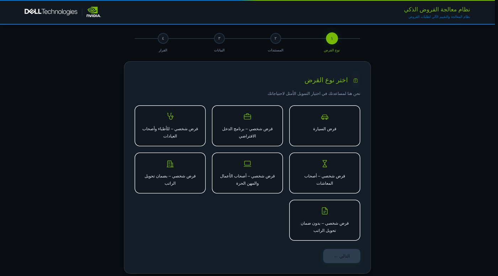

From documents to an auditable decision
A fine-tuned vision-language model reads the same papers a loan officer reads — national ID, employer letter, tax card, bank statements — and a deterministic state machine drives the underwriting decision. The checks that protect the bank are strict arithmetic, not probabilistic inference.
Retail loan origination is predominantly paperwork review. An applicant submits a packet of documents; a credit officer reads them, transcribes the figures, cross-checks declared numbers against bank slips, and only then applies policy rules. The manual transcription and cross-referencing consumes days — and introduces human fatigue errors.
The model extracts; it does not decide. Cross-document consistency, Debt Burden Ratio (DBR) calculations, and risk tiering are deterministic arithmetic. The vision model can be wrong without the decision being unsafe — and when it is wrong, the anomaly routes immediately to an underwriting exception queue.
Document intake
The applicant uploads photos of their national ID, employer certificate, and supporting documents. No rigid templates or manual alignment required.
Fine-tuned vision extraction
Qwen2.5-VL-7B with custom LoRA adapters reads Arabic typography, stamps, and layout structures natively — looking at the page visually rather than converting through lossy intermediate text pipes.
Deterministic policy execution
Arithmetic verification across documents: name matching, income-to-installment ratios, employment stability verification, and SAMA regulatory caps.
LangGraph audit trace
A state machine walks the decision graph, recording the rationale, extracted values, and rule outcomes into an immutable audit record for compliance inspection.

The applicant-facing portal is in native Arabic throughout. The applicant selects loan type, uploads documentation, and the state machine advances through verification stages with live feedback on each check.
A general foundation vision model handles standard passports but struggles on regional tax cards and employer letters. We fine-tuned Qwen2.5-VL-7B specifically on regional financial documents:
| Architecture Parameter | Value |
|---|---|
| Base Foundation Model | Qwen2.5-VL-7B-Instruct |
| Fine-Tuning Method | LoRA · r=64 · alpha=128 |
| Training Duration | 4 epochs · 4,200 steps |
| Final Evaluation Loss | 0.139 (down from 1.48) |
| LoRA Adapter Memory Footprint | 727 MB on GB10 unified RAM |
An end-to-end black-box model that reads documents and outputs an approval. When it misreads an income digit, it silently approves an uncreditworthy loan with no audit record.
The vision model only extracts structured fields. Deterministic code enforces the policy. If extraction fails, the application cleanly diverts to human review.